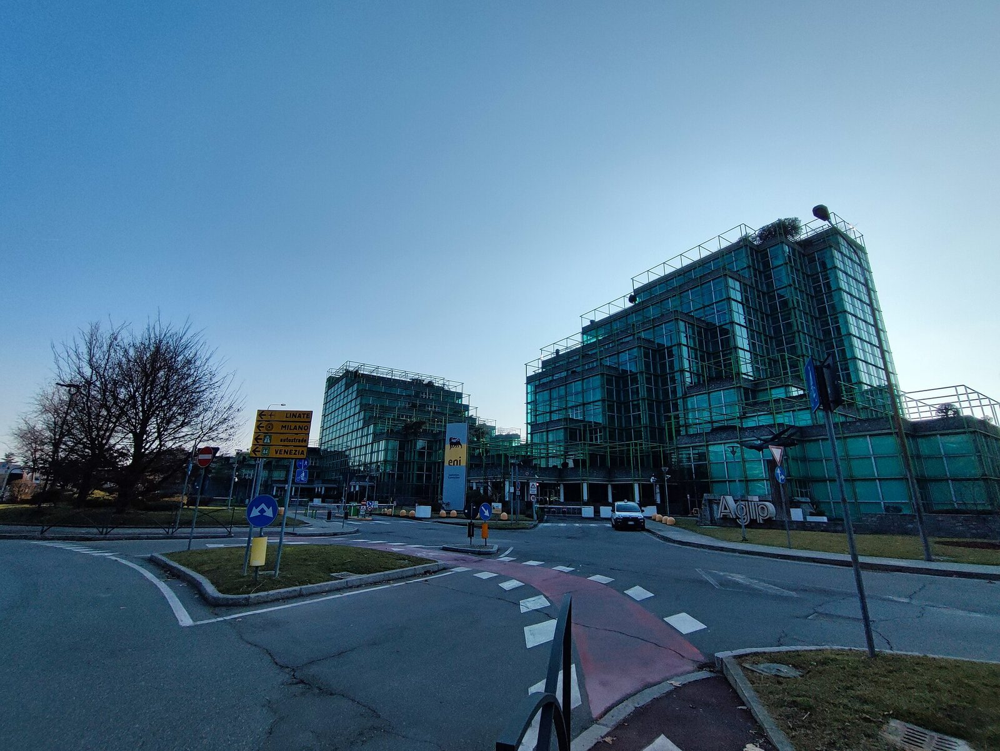

Martedì 18 agosto 2026 Piazza Affari chiude in territorio negativo, in linea con il calo dei principali listini europei. Il FTSE MIB perde −0,40% attestandosi a circa 53.487 punti, frenato dalla debolezza del comparto bancario e assicurativo. Banco BPM e Generali sono tra i titoli più deboli della seduta, mentre il settore energetico brilla: Eni avanza +0,34% a €23,775 grazie al rialzo del petrolio WTI (West Texas Intermediate) sopra la soglia degli $88 al barile.
L'andamento degli indici europei
| Indice | Chiusura | Variazione giornaliera |
|---|---|---|
| FTSE MIB (Milano) | 53.487 | −0,40% |
| DAX (Francoforte) | 26.221,60 | −0,44% |
| CAC 40 (Parigi) | 8.562,90 | −0,19% |
L'Europa chiude in rosso su quasi tutti i fronti, con il DAX tedesco che registra il calo più marcato (−0,44%), mentre Parigi mostra una tenuta relativa (−0,19%). Il denominatore comune è l'incertezza geopolitica legata alle tensioni Iran-USA nello Stretto di Hormuz, il passaggio strategico per il 20% del commercio globale di petrolio, che alimenta pressioni inflazionistiche e frenano la propensione al rischio degli investitori.
Le banche sotto pressione: Banco BPM e Generali in calo
Il comparto bancario e assicurativo italiano è tra i più penalizzati della seduta. Banco BPM e Generali — tra i titoli a maggiore capitalizzazione del FTSE MIB — cedono terreno in una giornata in cui l'incertezza sulla politica monetaria della Federal Reserve statunitense si riflette anche sui mercati europei. Il rendimento dei BTP (Buoni del Tesoro Poliennali) a 10 anni rimane elevato, comprimendo i margini attesi nel comparto del credito.
Per le banche italiane, il contesto è particolarmente sfidante: da un lato i tassi più alti aumentano i ricavi da interessi (il cosiddetto Net Interest Income — NII, margine di interesse netto), ma dall'altro l'eventuale rialzo Fed di settembre potrebbe peggiorare la qualità del credito se rallenta l'economia globale. Gli investitori si posizionano in modo difensivo in attesa dei verbali FOMC di domani.
💡 Impara: Spread BTP-Bund (differenziale di rendimento Italia-Germania)
Lo Spread BTP-Bund (differenziale di rendimento Italia-Germania) misura la differenza tra il rendimento del titolo di Stato italiano a 10 anni (BTP) e quello tedesco (Bund), considerato il benchmark europeo di riferimento. Quando lo spread si allarga, significa che gli investitori chiedono un premio di rischio maggiore per detenere debito italiano: questo aumenta il costo di finanziamento dello Stato italiano e, indirettamente, tende a pesare sui titoli bancari perché le banche italiane detengono grandi quantità di BTP nei propri portafogli.
Il settore energetico brilla: Eni e Saipem appoggiate al petrolio
La nota positiva della seduta arriva dal comparto energetico. Eni, la principale compagnia petrolifera italiana, avanza +0,34% a €23,775, toccando un massimo intraday di €23,89. Il driver è diretto: con il WTI sopra $88, i profitti attesi dei grandi produttori di idrocarburi salgono automaticamente. Anche Saipem — la controllata di servizi all'industria petrolifera — beneficia dell'alta domanda di perforazioni e manutenzione che accompagna i cicli di alto prezzo del greggio.
Il paradosso della giornata è evidente: il petrolio alto, che pesa sull'economia generale e sulle borse, diventa un vantaggio competitivo per le aziende direttamente esposte alla produzione e ai servizi energetici. Questo meccanismo è noto come Commodity Price Sensitivity (sensibilità al prezzo delle materie prime).
| Titolo | Settore | Prezzo | Variazione giornaliera |
|---|---|---|---|
| Eni | Energia — Oil & Gas | €23,775 | +0,34% |
| Saipem | Servizi petroliferi (Oil Services) | — | in rialzo |
| Banco BPM | Bancario | — | in calo |
| Generali | Assicurativo | — | in calo |
💡 Impara: Commodity Price Sensitivity (sensibilità al prezzo delle materie prime)
La Commodity Price Sensitivity (sensibilità al prezzo delle materie prime) descrive il grado in cui i ricavi e i profitti di un'azienda variano al variare del prezzo di una materia prima. Le compagnie petrolifere come Eni hanno una sensitivity positiva al prezzo del petrolio: ogni aumento del prezzo del greggio si traduce direttamente in maggiori ricavi di vendita. Al contrario, le compagnie aeree o le aziende manifatturiere hanno una sensitivity negativa: per loro il petrolio è un costo, quindi prezzi più alti erodono i margini.
Il contesto europeo: tra geopolitica e politica monetaria
La seduta del 18 agosto riflette la duplice incertezza che pesa sull'Europa in questo periodo: la crisi energetica legata alle tensioni Iran-USA e l'incertezza sulla politica monetaria della Federal Reserve (Fed — Banca Centrale USA). I verbali della riunione di luglio della Fed saranno pubblicati domani sera: se confermeranno una forte corrente "hawkish" (favorevole ai rialzi), le borse europee potrebbero subire ulteriori pressioni nelle prossime sedute.
Sul fronte europeo, la BCE (Banca Centrale Europea) mantiene una postura più attendista rispetto alla Fed, ma i mercati guardano a Washington per capire la direzione globale del costo del denaro. Le trimestrali estive europee, che si concluderanno nelle prossime settimane, forniranno un quadro più preciso di quanto le aziende italiane e continentali stiano reggendo al ciclo di tassi elevati.
Prospettive per Piazza Affari
La settimana del 18 agosto è densa di appuntamenti: i verbali Fed di domani, il simposio di Jackson Hole che inizia venerdì 22 agosto e i dati sulle vendite al dettaglio USA. Per il FTSE MIB, i catalizzatori principali rimangono l'evoluzione dello spread BTP-Bund, il prezzo del petrolio e le indicazioni che emergeranno da Jackson Hole sulla traiettoria dei tassi globali. Un eventuale de-escalation nella crisi Stretto di Hormuz potrebbe riportare gli acquisti sui titoli più penalizzati nell'estate 2026.